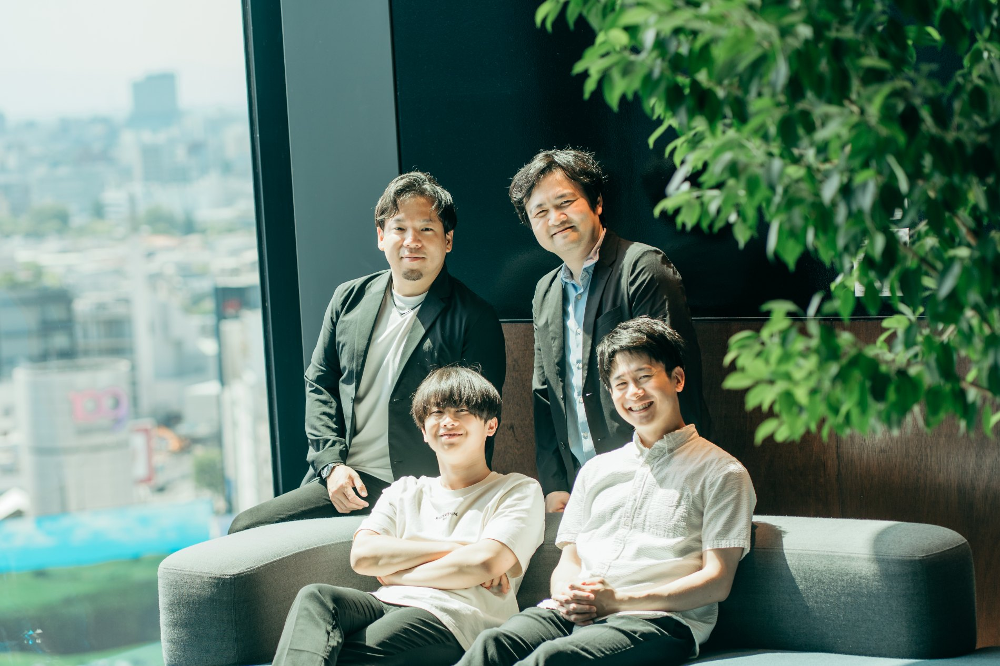

医療を、インフラに。
その実現に、本気で挑む。
電気・水道・通信のように、医療が生活圏に当たり前に存在する世界へ。私たちのミッション、それを支える思想と仲間をご紹介します。
会社概要。
| 会社名 | 株式会社Medixus（Medixus, Inc.） |
|---|---|
| 設立 | 2026年4月22日 |
| 代表取締役 | 大原 健太郎 |
| 資本金等 | 1000万円 |
| 株式構成 | 代表取締役CEO 大原 健太郎 |
| 主要投資家 | Skyland Ventures 5号投資事業有限責任組合 |
| 所在地 | 〒252-0303 神奈川県相模原市南区相模大野 |
| 事業内容 | Medixus OSの開発・提供／クリニック運営標準・ブランド・BPOの提供／医療機関・医療関連企業向けの業務効率化・AI導入支援／学会事務局代行 |
※ 株式会社Medixusは医療行為を行いません。医療法人・医師が医療提供主体となる前提で、非医療領域のOS・業務標準・ブランド・BPOを提供します。
私たちが、目指すもの。
地方・都市部、若年・高齢、忙しい現役世代、外出困難者を問わず、誰もが必要なときに最適な医療につながれる社会を実現します。
患者が症状を抱えてから、医師・検査・薬につながるまでの摩擦を最小化する。その導線そのものを設計し直します。
軽くするのは医療の質ではなく、患者が医療にたどり着くまでの負担。困った時にいつでも駆け込める医療を目指します。
5つの行動指針。
- Safety by Design医療安全を、設計に。
医療安全・個人情報・規制適合を、プロダクトの初期設計に組み込む。
- Doctor First医師を、置き換えない。
医師を代替するのではなく、医師が診療に集中できる環境をつくる。
- Patient Flow導線を、一気通貫で。
患者の導線を、入口から薬・再診まで一気通貫で設計する。
- Standardization再現できる運営を。
属人的な運営ではなく、再現可能なクリニック運営標準をつくる。
- Integrity信用を、最優先に。
医療の信用を毀損する、短期的な収益を避ける。

医療現場の内側から、
医療の当たり前を変える。
私は今、北里大学医学部で医療を学びながら、Medixusを経営しています。医療の最前線で感じてきたのは、「医療そのもの」ではなく「医療にたどり着くまで」に、あまりにも多くの摩擦があるという現実でした。
予約が取れない。何科に行けばいいか分からない。専門外だと別の日に別の病院へ。——この断絶を、テクノロジーと運営標準で解いていく。AIは医師を置き換えるためではなく、医師が人にしかできない判断に集中できる環境をつくるためにある。その思想を、事業のすべてに込めています。
代表取締役 CEO 大原 健太郎KENTARO OHARA
医療を、内側から知るチーム。
現役医大生のCEOを中心に、技術・事業・薬剤・検査・臨床の専門家が集う。医療現場の視点と、規制・業界ネットワークの両輪を持つチームです。

代表取締役。事業全体統括、医師ネットワーク構築、資本政策。北里大学医学部在学中の現役医大生CEO。
技術開発責任者。Medixus OS（予約・問診・自社カルテ・レセコン・経営ダッシュボード）の設計・開発統括。
事業開発責任者。事業企画、店舗設計、提携先開拓、運営標準・BPOの整備。
監修薬剤師・臨床検査技師。処方・服薬指導・検査連携領域の医療実務監修、薬局オペレーション設計。
監修医師。診療プロトコル、医療安全、AI問診サマリの医師目線レビューを担う。